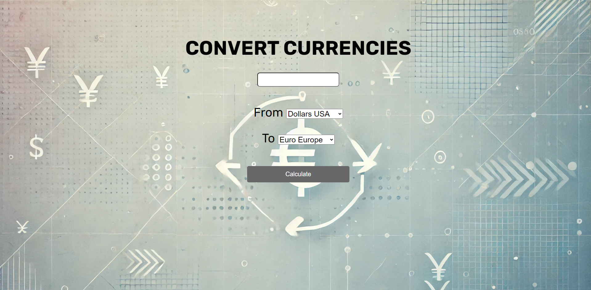
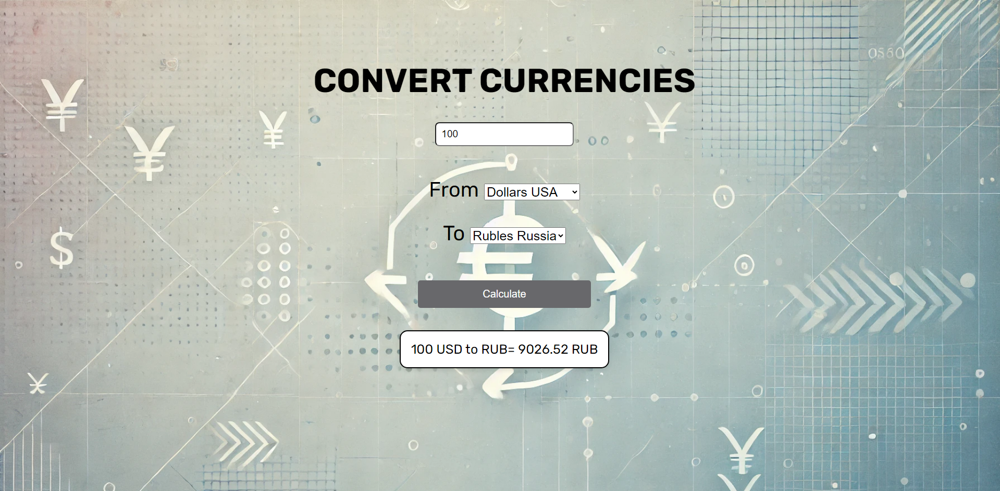

Ссылка на гитхаб проекта: github.com/Thomas3246/converter
Конвертер валют - web-приложение, написанное на GoLang. Графический интерфейс конвертера валют показан на изображении ниже.

Handle функция экрана GUI при выполнении HTML файла передает ему значение, полученное при конвертации, которое располагается под кнопкой "Calculate".
Значение выводится на экран только в том случае, если оно не пустое.
Поэтому при запуске сервиса или при попытке расчета с пустым полем ввода ничего не выводится.
На выбор для конвертации предоставлено 6 валют:
На вход программа получает численное значение размером до 10000. После выбора необходимых валют и нажатия на кнопку "Calculate", программа
открывает handler функцию, производящую все расчеты. Функция считывает вписанное значение, а также выбранные валюты. После этого отправляет запрос
к API сервису CURRENCYAPI посредством перехода по ссылке, состоящей из API ключа и необходимых для конвертации валют. От сервиса программа
получает JSON ответ, состоящий из времени обновления курса, валют для конвертации и самого значения курса. После записи полученных данных в переменную,
ответ округляется до 2 знаков после запятой и происходит перенаправление обратно к handle функции GUI.
При этом запоминаются выбранные валюты и при всех расчетах и обновлении страницы, все остаётся на своих местах.
Скриншот полученного результата представлен ниже.
